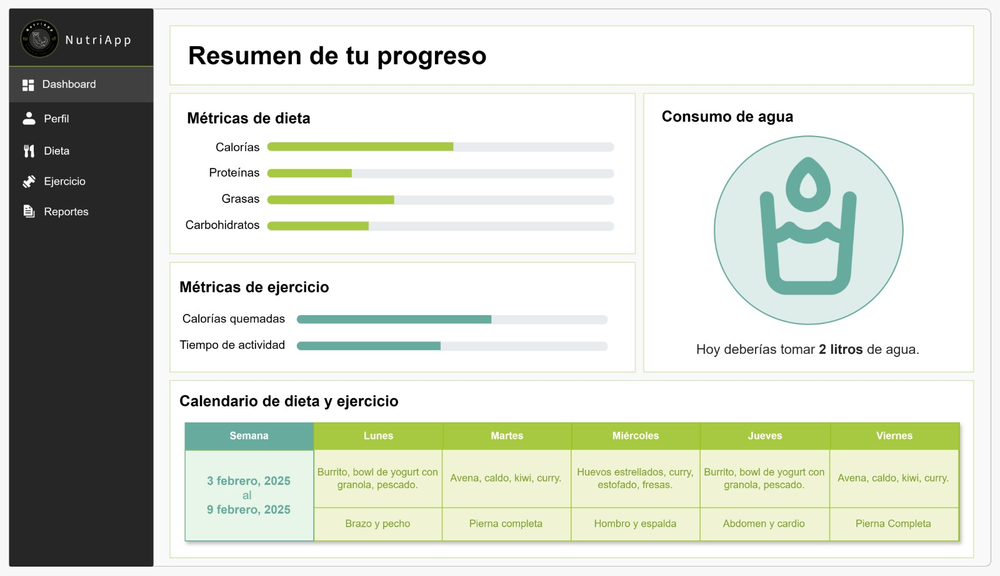
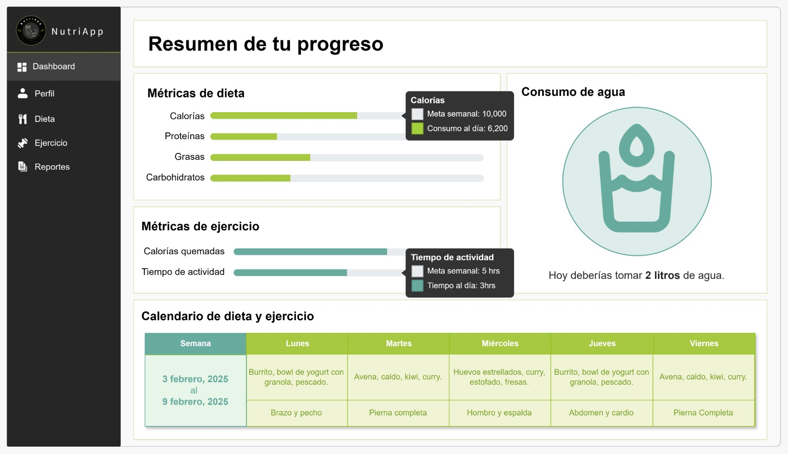
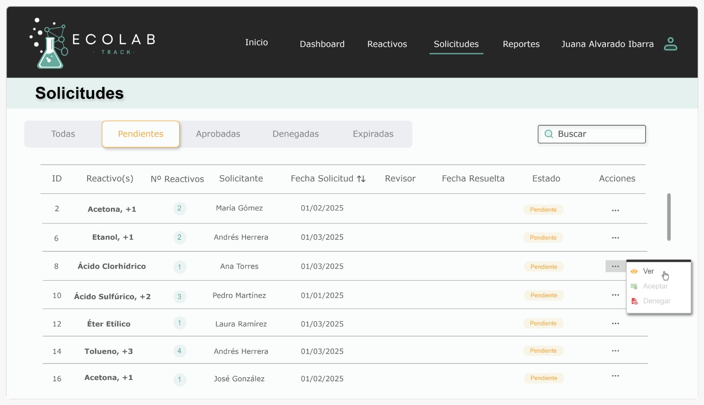
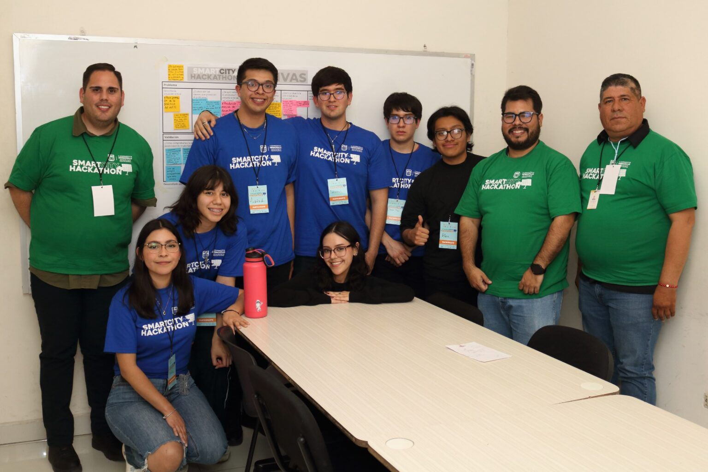
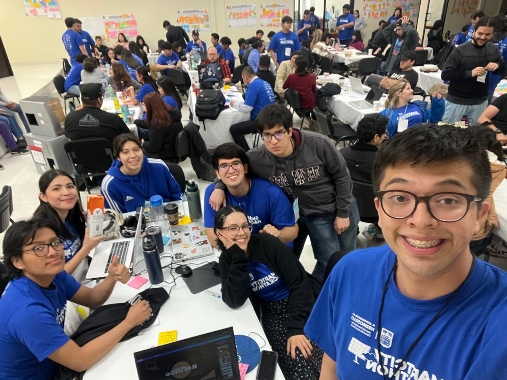
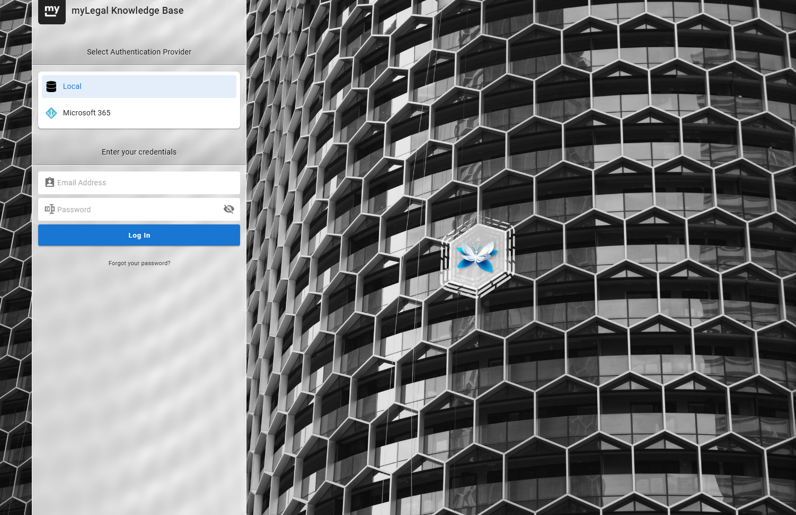
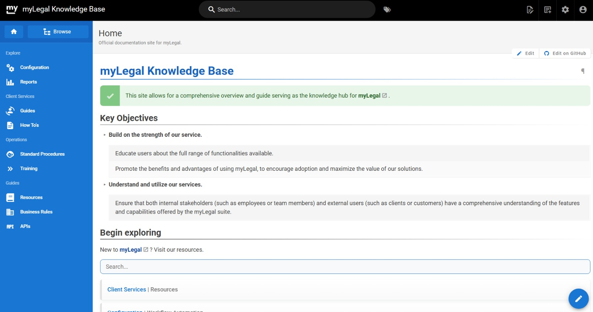

NutriApp – Prácticas de Desarrollo I
Desarrollo de una aplicación de escritorio para el manejo de programas
de alimentación y ejercicio de una nutrióloga. Fui la encargada del
equipo de diseño. Utilicé Drawi.io
para elaborar mockups de la interfaz y modelé los diagramas de secuencia,
colaboración y entidad relación para el mapeo de datos y base de datos.


Ecolab Track – Departamento de Polímeros y Materiales (Servicio Social)
Desarrollo de una página web para el laboratorio de la universidad,
enfocada en un sistema de tracking de reactivos monitoreados.
Elaboro mockups del sistema utilizando Drawi.io y Figma,
los cuales posteriormente son implementados en React junto con el equipo.


Smart City Hackathon - Ayuntamiento de Hermosillo
En Marzo de 2025, tuve la oportunidad de representar a la Universidad de Sonora
en el Hackathon organizado para la ciudad de Hermosillo. Aprendí mucho acerca del
trabajo en equipo y acerca de la colaboración para llegar a soluciones inteligentes
y sustentables.


Call Center – Legal Conversion Center
Inicié mi trayectoria profesional como agente de call center,
atendiendo llamadas para una campaña de Legal Conversion Center
durante casi dos años.
Equipo de Desarrollo – Legal Conversion Center
Desde abril de 2024 formo parte del equipo de desarrollo, donde me
encargué principalmente de la documentación técnica de la plataforma
myLegal,
incluyendo mapeo de datos, documentación de código y APIs. Mi labor fue levantar la página
de
Knowledge Base
(por medio
de Wiki.js) para alojar toda la documentación.


Startup impulsado por LCC
Actualmente trabajo como asistente del SCRUM Master,
coordinando equipos de operaciones, desarrollo y diseño.
Realizo labores de testeo de APIs, revisión de código, pruebas
unitarias y seguimiento del Jira board. Esta semana estoy a cargo
de revisar las actualizaciones de mockups mobile en Figma y
proporcionar feedback al equipo de diseño.